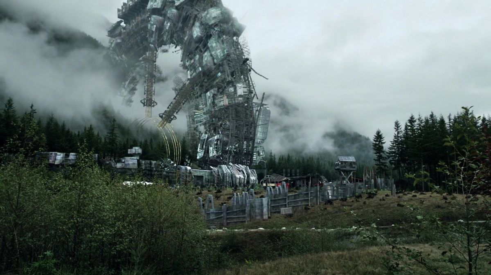

TARİHÇE
Arkadia, düşen Ark istasyonunun ana gövdesinden inşa edildi. Başta Camp Jaha olarak biliniyordu. Burası Skaikru'nun yeryüzündeki kalesi...
SAVUNMA:
KAYNAK:
KRİTİK PERSONEL
- BELLAMY BLAKE - Askeri Lider
- RAVEN REYES - Baş Mühendis
> Bağıl Nem: %12
> Radyasyon: Stabil
> Yerli Sinyali: Yakınlarda
